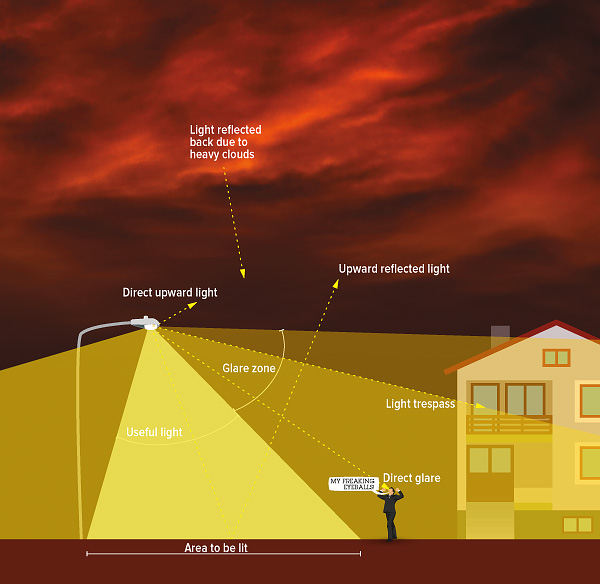

Blue tits (Cyanistes caeruleus) have be en shown to
adjust their awakening time according to local light
conditions. Hence, light pollution may cause animals
to wake up earlier and potentially sleep less or, as
cessation of activity can be delayed, also fall asleep
later. In contrast to laboratory studies, whether and
how artificial light affects sleep behaviour in
free-living birds has not yet been studied.